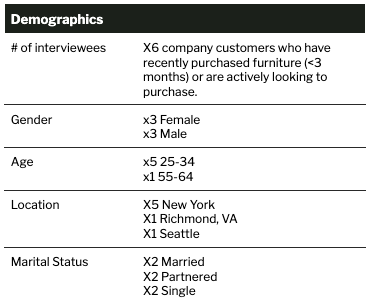
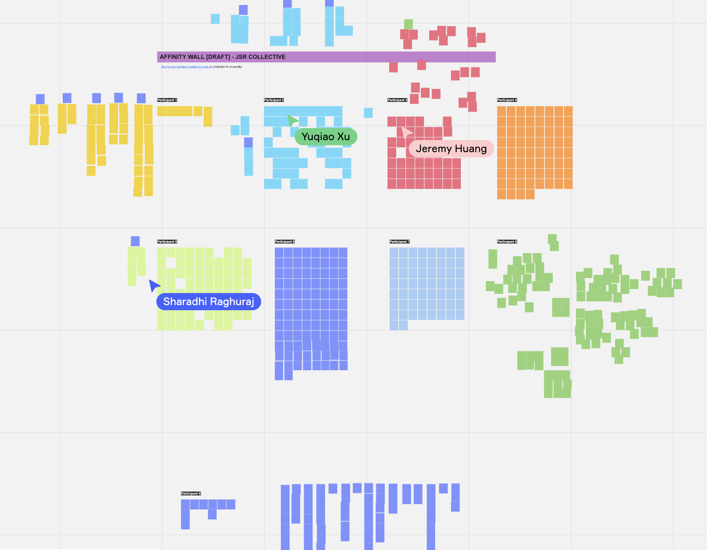
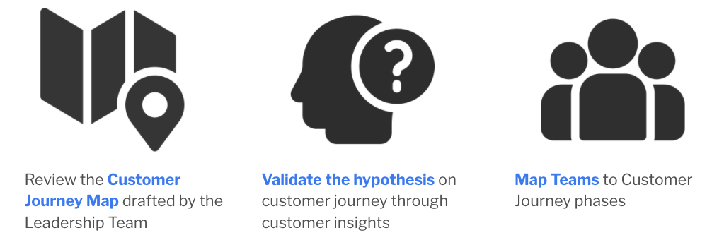
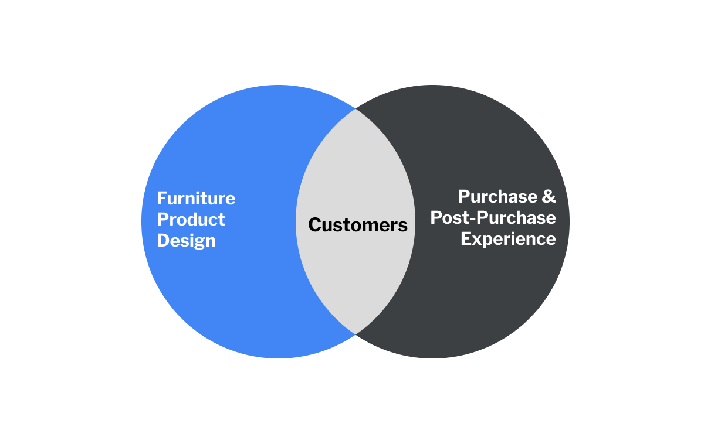
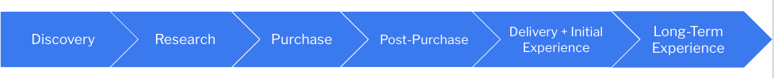

Customer Empathy Network
Client Problem Statement
In Fall 2021, an e-commerce furniture company engaged the JSR Collective (a team from the University of Michigan - School of Information) to help them seek to understand the customer experience in order to make decisions with a customer-centric perspective. The company had noticed that there is sometimes a disconnect between their customers' pain points and desires and the decisions made by the company that directly affect those customers. This “Empathy Network” as designed by the JSR Collective will be used by existing and future employees to understand the customer journey. Through analysis of qualitative data sources, this report seeks to interpret the company's existing sentiments toward Customer Experience, as well as validate accuracy of those assumptions toward the customer journey.
Research Goals
- Understand the company’s current sentiments toward Customer Experience
- Validate assumptions made by the company’s leadership toward the customer journey
- Provide recommendations to support the embedding of a culture of customer-centricity in current and future employees.
Methodology
The team conducted a 6 week virtual study to synthesize internal employee and external customer feedback toward customer experience. Employee participants were dispersed across the continental US. Customer participants were located in key markets for the company.
Phase 1 | x8 1:1 employee interviews across 4 job roles
- Customer Experience
- Marketing
- Product
- Operations
Phase 2 | x4 1:1 customer interviews
- x2 positive experience
- x2 negative experience
Phase 3 | Other artifact synthesis
- x2 video recordings of Product-led customer interviews (website usability testing)
- x1 walkthrough of Customer Support platform
- x1 walkthrough of e-Commerce testing platform
My role
Within the JSR Collective (5 teammates), I played the role of project manager and lead researcher. Direct responsibilities included:
- Acting as lead interviewer for Marketing, Operations, and Customer interviewees.
- Ownership of project team management, meeting organization, and client status updates.
- Coaching other teammates on client communication and presentation.
Research
Recruiting
Employee interviewees were chosen by the client contact for the project. x1 customer interviewee was provided by the client's Customer Experience team. The other x3 interviewees were recruited by the JSR Collective through a survey posted on social networks. x5 interview protocols were developed by the team for the employee job roles and customers. Each interview was lead by x1 interviewer accompanied by x1 notetaker. All interviews were conducted over Zoom.

Affinity map
Using Miro, the team transcribed the interview notes into virtual sticky notes used to develop an affinity wall with 3 levels of thematic hierarchy. 

Customer journey map validation
During employee interviews, an artifact was surfaced showing a rough draft of the company's customer journey. This was developed as part of a Leadership Team strategy meeting. The team validated accuracy of the company's assumptions against affinity wall insights. The team also provided a revised journey map, including mapping of job roles against customer journey phases and recommendations for future focus.
Background research
In order to better serve our client, all 5 members of the JSR Collective also embarked on individual background research around the problem space of customer experience and cross-functional collaboration. Altogether, the team reviewed existing literature and produced 20000+ words of relevant reporting. You can read my background research report here: Defining the customer experience and operational implications for customer-centric firms
Key Findings
Customer experience definition
The company's definition of customer experience is the intersection of good product design and seamless delivery fulfillment. These two mindsets can sometimes feel at odds with each other, causing a cultural clash between teams.
“Customers care the most about whether their problems are being solved or not … we are an e-commerce company selling a product so we have to be solving a problem for them with our product and our solution … this can be different for each customer.” — Employee quote on furniture product design
“Whenever you're giving someone your hard earned money, I think that is when the most vulnerable, the most emotional the customer is… that's when they reach out to us, that's when they're the most confused or most frustrated or most excited … that's when they're feeling all the feelings.” — Employee quote on furniture fulfillment
Current sentiments toward the customer
Despite the client's assumption that the company is making decisions without considering the customer experience, most of the company is experiencing a cultural change that pushes for customer-centric thinking. The catalyst to this shift was a series of failures during a recent product launch, resulting in bad press and requiring systemic company triage. The company's employees define taking a customer-centric stance as moving away from reactive customer problem-solving, building out the Customer Experience Team, and making customer data-driven decisions. However, the Leadership Team caveats that there must be a balance between customer input and company vision, as it is the vision that attracts their company base.
“We've gotten to this point, candidly, in our business through good intuition and now we need to get way more scientific in what the customer needs.” — Employee
"I can't rule them out all together … there's something about [the company] I like, they're trying … I appreciate the designs and I love that it's a young company, I love stuff like that. It's everything I support.” — Customer with a negative purchasing experience
Customer journey map
As drafted by the leadership team, the existing customer journey map is generally accurate to real customer desires. Based on the customer insights from our analysis, we recommended emphasizing the following components:
- More AR visualization to allow customers to envision furniture products in their own home (in lieu of physically seeing the product before purchase)
- Increase the customer's ability to access to Customer Support Team during Research and Purchases phases (currently mostly supporting Delivery and Returns)
- Update the post-delivery Product Satisfaction Survey to include Delivery Experience feedback
Recommendations
Customer journey map socialization
Make the customer journey map accessible to the entire team. Through our analysis, we found that some team members were aware of the customer journey map draft whereas others were not, leading to disparate views on impactful customer touch points. It's recommended to house the customer journey map on a Customer Experience Home Page in the company wiki.
Customer experience as a priority
Create opportunities to stimulate cross-functional activity / collaboration, mobilize resources, and co-create iterative improvements toward a better customer experience. Following current company norms in product co-creation, this can include “hackathons” where cross-functional teams work together to solve the most common customer support use cases. The company may also consider the inclusion of “customer-centricity” as a core competency for future company recruitment, as all departments are rapidly expanding.
Continued customer research
Continue to conduct customer research and experiments (using scientific methods). In the last couple months, the E-Commerce team has begun conducting A/B tests on the company's website using Heap. This has already added value by dispelling previously rooted assumptions on their customer values, such as sustainability being a “nice to have” in furniture decisions, rather than a necessity. During these customer research activities, invite other teams / employees to participate as observers. Customer research has been lead by the Product Team; historically, the Product Team has been very protective of their work and invites other teams into the product development process only at specific stages. This has resulted in uneven dissemination across teams of insights gathered during research throughout the product development lifecycle.